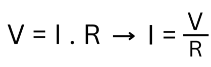
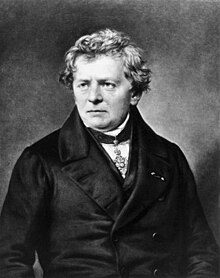

Hukum Ohm
Hukum Ohm adalah prinsip dasar dalam fisika listrik yang menjelaskan bagaimana tegangan (V), arus listrik (I), dan hambatan (R) saling berhubungan dalam suatu rangkaian listrik. Ditemukan oleh Georg Simon Ohm pada tahun 1827, hukum ini menyatakan bahwa arus listrik yang mengalir melalui suatu bahan akan berbanding lurus dengan tegangan yang diberikan, dan berbanding terbalik dengan hambatan bahan tersebut. Secara sederhana, semakin besar hambatan, semakin kecil arus yang mengalir, dan sebaliknya. Hukum Ohm sangat penting dalam memahami dan merancang berbagai perangkat elektronik serta sistem listrik.


Georg Simon Ohm (1789 - 1854)
Fisikawan Jerman